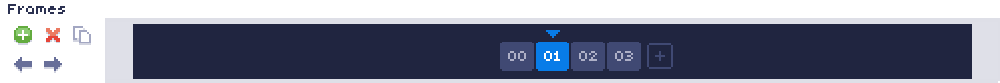

Frames Panel
The frames panel is located at the top left of the main screen, below the "Song" panel.
Frames are a series of rows, which can hold instructions for each channel. During playback, the song will play through a frame one row at a time, then move on to the next frame in the sequence, and so on. They can be considered as ways to divide your song into sections or chunks.
The large space to the right shows a list of all frames in the song, with the frame currently being edited highlighted in blue. Clicking the plus sign at the end of the frame list will add a new frame to the end of the song. Clicking a frame will navigate to editing that frame, and using the scroll wheel while hovered over this space will navigate forwards and backwards through frames.
The small toolbar at the right allows simple functions for inserting a new frame, deleting the current frame, duplicating the current frame, and moving the current frame forwards / backwards in the sequence.